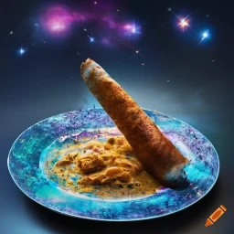

Cosmic Dosa

The Cosmic Dosa is a dazzling and otherworldly culinary creation that captures the essence of the universe on a plate...
Recipe:
- Prepare the Dosa Batter:
- Wash and soak the rice, urad dal, and fenugreek seeds separately in water for 4-6 hours.
- Grind the soaked dal and fenugreek seeds to a smooth batter using a little water.
- Grind the soaked rice to a slightly coarse batter.
- Mix both batters together, add salt, and let it ferment overnight or for about 8 hours.
- Create the Cosmic Infusion:
- Divide the dosa batter into separate bowls.
- Add a few drops of different edible food colors to each bowl and mix well to create cosmic hues (blue, purple, pink, and black).
- Heat a non-stick pan and drizzle a few drops of oil. Pour a ladleful of one colored batter onto the pan, swirling it to create a thin, colorful dosa. Cook until golden and crispy, then flip and cook the other side.
- Repeat the process with the other colored batters.
- Prepare the Starlit Coconut Chutney:
- In a blender, combine grated coconut, green chilies, ginger, coriander leaves, and salt. Blend to a smooth chutney, adding a little water if needed.
- Transfer the chutney to a bowl and garnish with edible glitter or shimmer dust to create the starlit effect.
- Assemble the Cosmic Dosa:
- Place the colorful dosas on serving plates, layering them to create a cosmic stack.
- Serve the Cosmic Dosa with the starlit coconut chutney on the side.